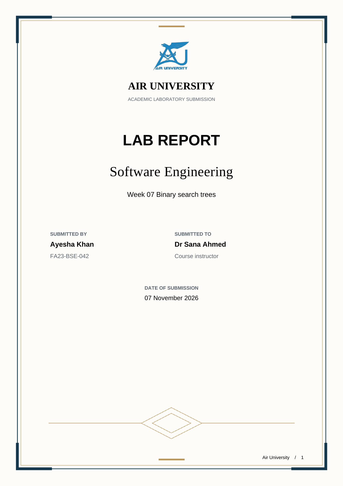
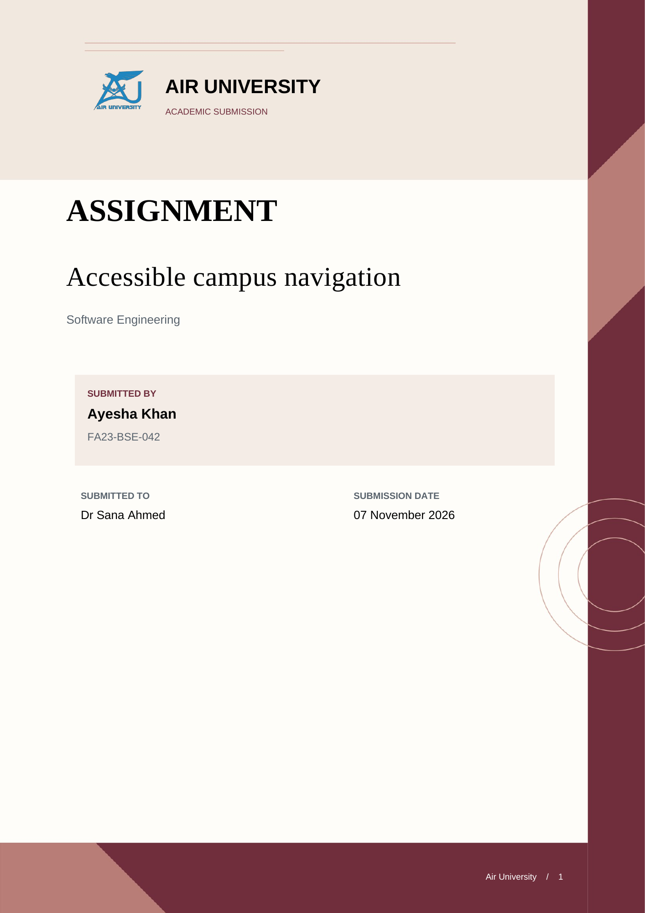
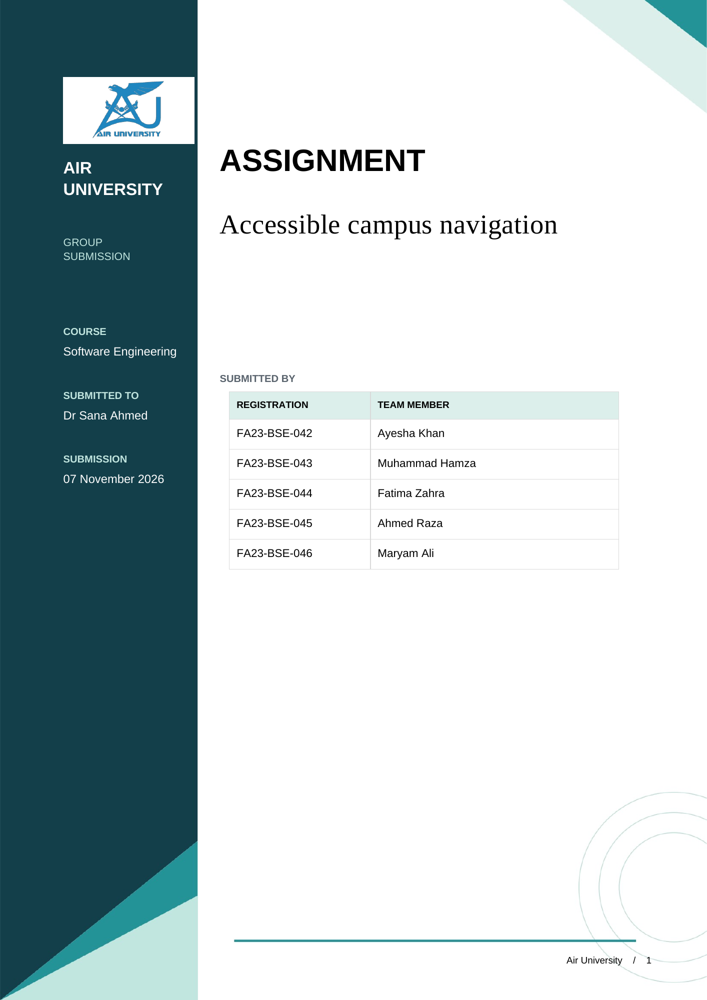
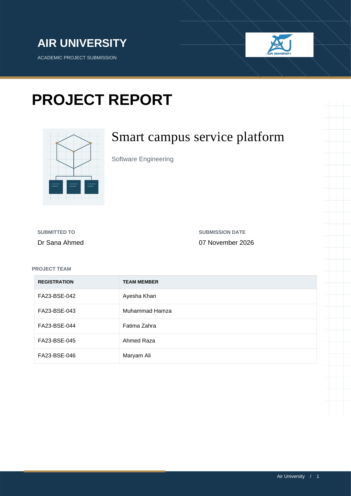

01 Heritage academicIvory paper, navy and gold framing, centered university masthead and paired submission details.Word templateFilled WordPDFLong content PDF
02 Maroon editorialCream university masthead, maroon geometric edge, serif title and a shaded author panel.Word templateFilled WordPDFLong content PDF
03 Teal geometryDeep teal sidebar, diagonal corner artwork, white university lettering and an editable team roster.Word templateFilled WordPDFLong content PDF
04 Blueprint projectNavy university banner, gold accents, original system illustration and a full width member table.Word templateFilled WordPDFLong content PDF